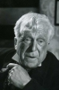

Country:United States, 83 minutes
Spoken languages:English
Genres:Crime, Romance, Thriller
Director(s):Alfred Hitchcock
Writer(s):Charles Bennett, Josephine Tey, Edwin Greenwood, Anthony Armstrong
Video Codec:Unknown
Number: 134


Certification:NR
Storyline:
Robert Tisdall finds on the beach the corpse of a woman he knew. Others wrongly conclude that he is the murderer. Fleeing, he desperately attempts to prove that he is not the killer. A young woman becomes embroiled in the effort.
Cast: 

Medium: Original DVD,
Comments: Part of: 100 Greatest Horror Classics
Loaned: No
Aspect ratio: Unknown